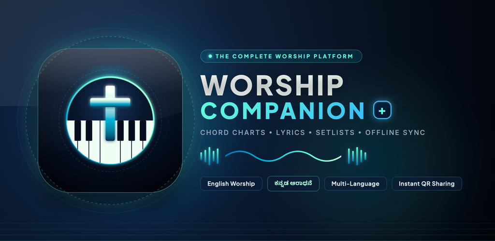

The Modern Songbook & Stage Companion
Engineered for church worship teams, choir vocalists, and instrumentalists. Access over 2,000+ Kannada, English, and multi-language hymns with live chord transposition, hands-free auto-scroll, setlist curation, and rock-solid 100% offline performance.

Real-Time Chord Transposition
Need to adjust a song to fit your singer's vocal range on the fly? Click below to experience instant chord shifts with zero page reloads.
A Library Built for Real Congregations
Whether leading in local regional languages or contemporary international anthems, Worship Companion keeps your entire team on the exact same page.
ಕನ್ನಡ ಕ್ರೈಸ್ತ ಗೀತೆಗಳು (Kannada)
Extensive collection of traditional hymns and contemporary worship songs. Includes both native Kannada script and English transliteration for non-native readers.
English Worship & Hymnody
Modern contemporary praise (Bethel, Hillsong, Elevation) alongside timeless historic hymns. Formatted with verified chords and capo instructions.
Other Languages & Bilingual
Songs in Hindi, Tamil, Malayalam, and bilingual service formats. Cleanly tagged with chorus and bridge markers for seamless team coordination.
Engineered for Sunday Rehearsals & Live Services
Every feature was built from hands-on musician feedback on church platforms.
100% Offline SQLCipher
Sanctuary Wi-Fi is notoriously unpredictable. Worship Companion stores its entire 2,000+ catalog in an encrypted local database. Zero loading circles on stage.
Live Transpose & Capo Helper
Instantly shift between any of the 12 keys. Built-in Capo calculator shows acoustic guitarists the exact chord shapes to play with capo positions.
Hands-Free Auto-Scroll
Adjust your desired scroll speed with a subtle slider. Lyrics smoothly advance down the screen so your hands never have to leave your keyboard or guitar.
Dynamic QR Sharing
Share any song or Sunday setlist instantly with your worship team or congregation via dynamic QR codes. Opens instantly in any mobile browser without requiring app installation.
AI Hymnal Scanner
Have an old physical church hymnal or printed bulletin? Snap a picture with the camera. In-flight OCR automatically digitizes verses and chorus directly into your library.
Dark Stage Mode
True OLED black backgrounds with high-contrast, glare-free typography. Designed to blend invisibly into dimly lit church stages without blinding your eyes or the audience.
Designed for iOS & Android
Clean, native Flutter performance with responsive layouts optimized for iPhones, iPads, and Android tablets.
iOS • Cupertino Design
Android • Material 3 Themed
Ready to Elevate Your Worship Team?
Download Worship Companion today on your mobile device, desktop, or explore directly via the web lyrics reader.